week 11November 2–November 8
— Beowolf font by LettError (Erik van Blokland & Just van Rossum)
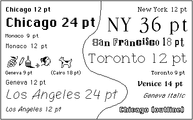
— Bitmap type from first MacOS
This past week has been trying to dig further into what “digitally native” type means, and trying to figure out a wording that makes this idea accessible and understandable without undermining it.
When I think of precedents for digitally native type, bitmap fonts are the first. They reflect their environment’s constraints and aren’t bitmap for the sake of being bitmap — they had to be bitmap. That’s digitally native, not imitative like “bitmap” fonts made today, which look inherently dated. Such a rigorous constraint to letterform means that glyphs first try to follow the general structure of a letter, the very skeleton.
Serifs and contrast and optical correction don’t make a letter; they make a typeface that suits convention to some degree. What makes a letter is its basic structure that makes it recognizable as such. An E is one vertical line with 3 horizontal lines attached to the right of it — even that definition may not be specific enough. What happens when different language is used to describe letterform? Instead of strokes and serifs, what if boxes and attachments were the terms?
Another typeface I consider to be digitally native is LettError’s Beowolf. It directly exposes letters as data, code, points. Randomness and animation and the layering of light-based color. But still visible is its traditional roots: serifs and contrast.
Is seriffed type on the screen skeuomorphic?
The common practice in type design today is to revive or heavily reference historical form and convention. How else can type design be practiced, particularly in regard to web fonts? How can we look more toward the now? How does the digital environment affect type and how can the process of type design and letterform itself attempt to reflect the qualities of the contemporary digital environment? These are questions of curiosity rather than opposition or pursuit of a dogmatism.
Interpretations of old form made contemporary
These are examples of contemporary type that resonated with me before I knew why they did:
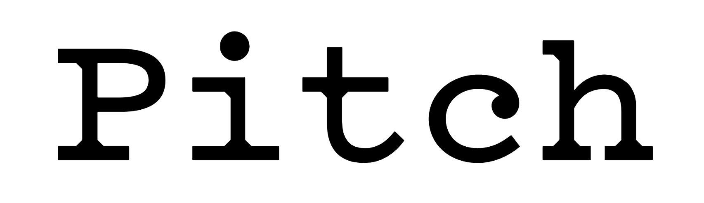
— Pitch by Klim
Back when I was taught the value of typefaces and type design, I was introduced to Klim. Pitch made me a bit more aware of what type could be, how it could really make someone react. Why does it look so good to me? It’s hit me for 3 reasons, each one articulated at different times the more I have looked at:
1: It’s beautiful. Crisp without feeling cold.
2: Pitch has a very specific feel, a synthesis of digital and analogue that recalls but does not imitate typewritten text.
3: The one move of geometric bracketed serifs defines Pitch’s entire character (which is why that move also appears where strokes join in the sans version). Instead of trying to imitate ink spread, Sowersby fills those missing pieces with pure shape.
This is a great example of contemporary type informed by historical precedent that doesn’t look dated or completely derivative. Sowersby also wrote an insight that proves that he’s aware of the contemporary digital environment in his essay “10000 Original Copies”:
“I was trying to capture an impossible aesthetic, that I was trying to mimic a technology that isn’t used. So I decided to make it as ‘digital’ as possible, to be ‘true’ to the spirit of the thing. I made the points infinitely sharp, I detailed it to be contemporary and rigourous. I want it to be a product of our time and our digital culture.”
— (talking about when he was digitizing Fell Types, not specifically Pitch)
In the beginning of the article he also makes explicit:
“letters [are] now divorced from lead and married to light”
Abstraction of physical type’s byproducts or the complete removal of those material artifacts is key to making contemporary web type not look imitative. Type needs to be self-aware of its environment.
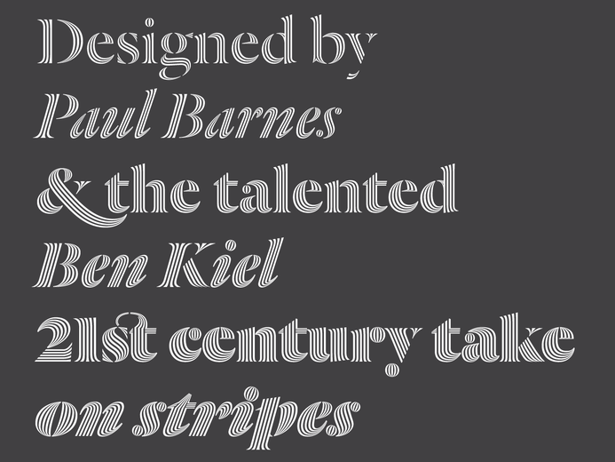
— Dala Prisma by Commercial Type
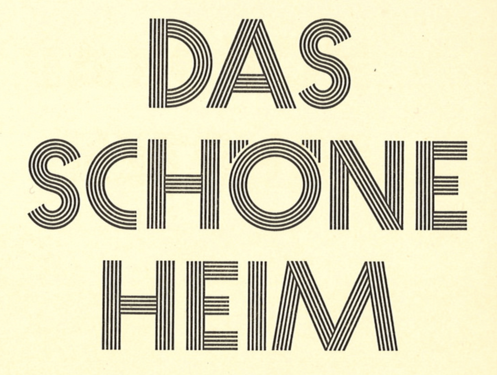
— Prisma, image from here
Dala Prisma was made possible with scripting (and patience). It would have taken a lot longer to draw this face without the help of programming. Again, this is beautiful. It was inspired by the striped type Prisma which was more manageable to draw because of the monolinear, geometric strokes. Dala Prisma applies stripes to a Victorian shape, creating the great beach ball effect and the “infinitely sharp”, tapering stripes.
Pitch and Dala Prisma possess no material noise. They’re crisp. Even though their forms are all inspired by material historical precedent made with different technology, there’s no erosion or ink splatter. Because now it’s all light behind a frictionless glass screen. Type norms of serifs and ball terminals persist, though abstracted. Is that what makes a good type? Accessible in its contemporaneity, not abstracted to uselessness or unfamiliarity or dully derivative of history?
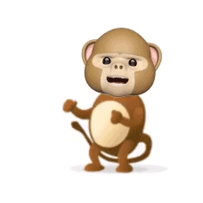
— monkeytype.xyz
Oh-ooh-ah-ah-ahh-ahhh: Monkey Type is an anonymous foundry “based on the internet”. The concept of their not-serious foundry is a response to the high-brow, pedantic type world. But they’re fully aware of their own ridiculousness in making type and working on an s for three years.
But they just made another grotesk font. The framing of a practice and a foundry maybe means just as much as the work. Oof.
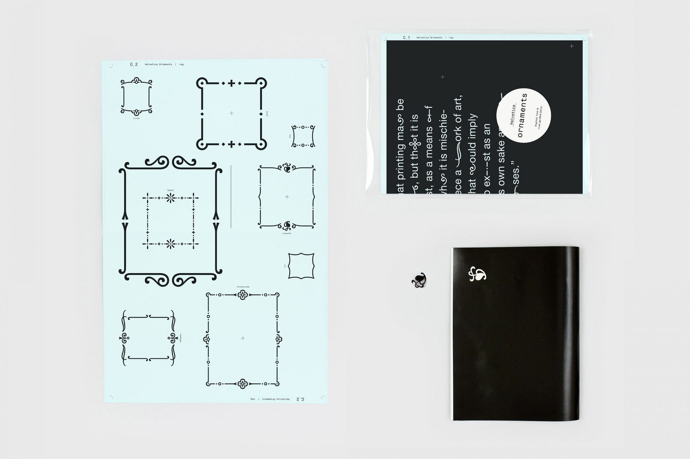
— Helvetica Ornament by Anther Kiley
Synthesizing yet juxtaposing.
In bookbinding my professor mostly only ever references either Ken Botnick or Tauba Auerbach.
Warranted.
Auerbach makes a lot of books and she also has a series of fonts that begin with the same rectilinear proportions. Each one then forms from a matrix.
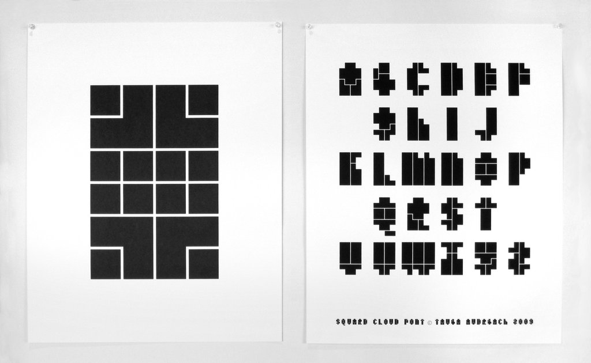
— Square Cloud
Looking at all her type specimen, patterns in letterform structure crop up, such as the Christian-cross T’s. To Auerbach, these types are personal, a “visualization” of her voice. They are not commercial/retail typefaces. Despite their logical matrices, they don’t come off strictly mechanical but rather idiosyncratically programmatic. They are also related to the whole body of her work in how physical and digital forms influence each other and how false dimension is created.
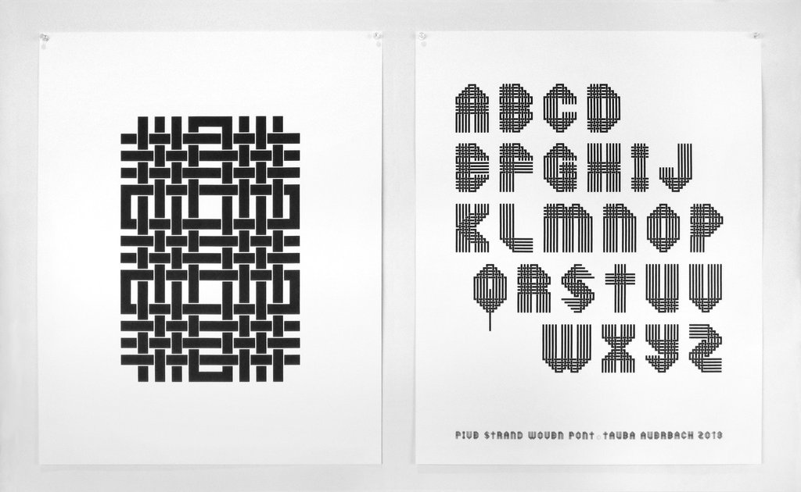
— Five Strand Woven
The Five Strand Woven for example ties into the series of woven canvases. This font references a handicraft that isn’t calligraphy or pen-based.
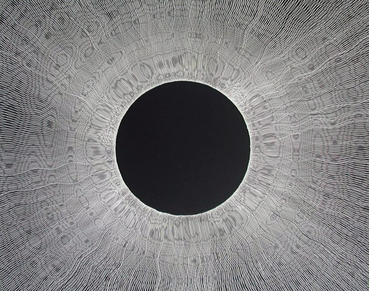
— scratchboard by Jane Masters
Pierre di Sciullo made all these experimental fonts:
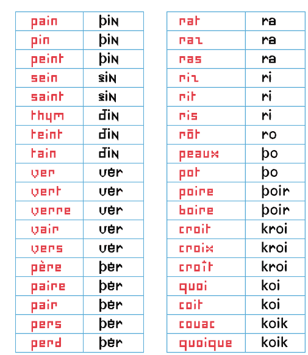
Sintétik: “ruthlessly compresses language” by making homophonous syllables be spelled the same way. This reduction in redundancy reminds me of how Jan Tschichold pushed for unicase type designs since A and a make the same sound (but he fails to acknowledge that they can serve different purposes).
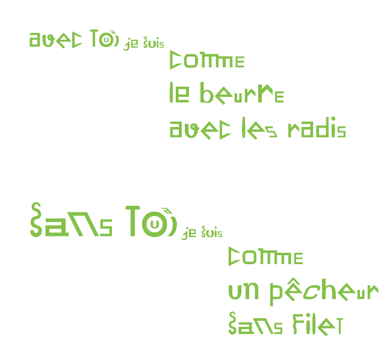
Quantange: an attempt at visualizing sound with form (tying phonetics closer to visuals) in the French language.
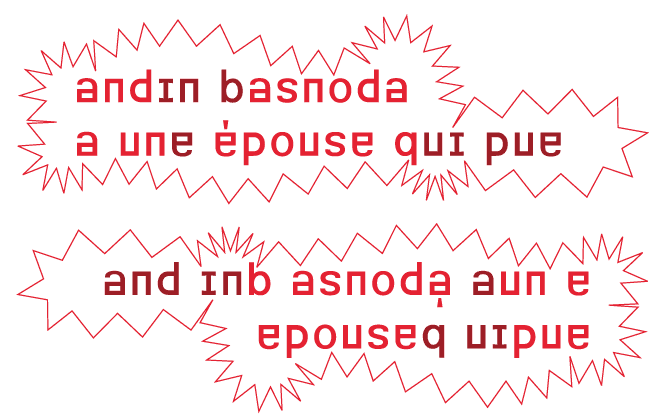
Basnoda: “for the setting of a vertical, palindromic sentence by Georges Perec. It reads, upright, from left to right, then from left to right - though in this latter case upside down.”
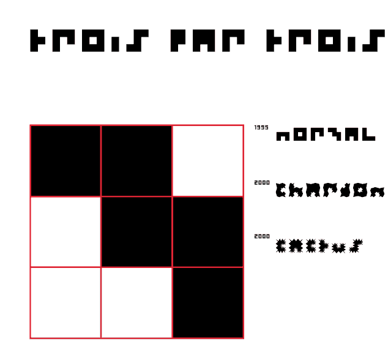
3 par 3 (3 by 3): “A character designed on a grid of three squares by three = 9 squares. This is not many. I have attempted the same on a grid of 1 square by 1. The result had great rigour, but was a little monotonous.” (ha)
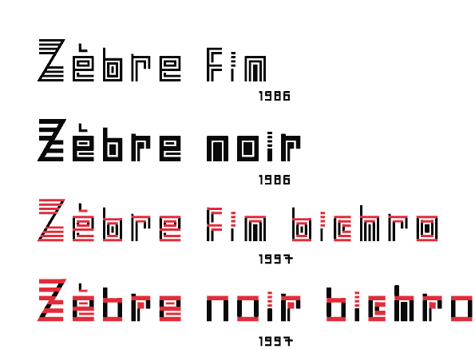
Zebra: an i with 4 tittles! What would a seriffed serif look like?
Why Do All Websites Look the Same? — Boris Müller:
“Templates are content agnostic”
An unanswered question I’ve been having is if type revival is a form of appropriation, and if it matters if type designers that heavily reference historical form also consider the social, political, etc. context of that type’s time. I don’t want to assume that designers just pull type they formally like and that’s that, but sometimes it kind of comes off that way, or they try to frame it as a historical ode. For what? Credibility in validating their own type? There’s a lot of rhetoric to unpack. But I guess the truth is in the type designs themselves. Are serifs merely attachments, or do they hold some connotation? Does their origin from handwriting really matter anymore?
“Sometimes, if you want to design the future, you have to rediscover the past.”
Back to thinking in terms of websites, not type: Naïve but well-meaning form that was created because no conventional model existed at the time is priceless. Unlearning is hard.
“Designing Between Points” — Aetherpoint (Andrew Johnson): Johnson writes about how tools and GUIs affect our ability to visualize possibilities. Expanding on responsive design, he pushes for options presented on axes instead of discrete points determined by the software designers. More open spaces, larger rooms, rather than many small rooms.
“Skeuomorphism, Flat Design and The Rise of Type Design” — Michael Abehsera: Found this article after googling something along the lines of “skeuomorphic type design”. Abehsera presents a somewhat questionable approach to UI design, but I get what he’s attempting. He proposes “Type Design” (a confusing term considering that type design exists) as the next level of minimalism for UI, moving past skeuomorphism, material design, and flat design.
A lot of interfaces are just text in boxes. So why still bother with boxes, basically. The role of image in UI design is the text-image: type carries the tone but it also is the navigation and the info. Abehsera also argues that it’d be easier to maintain and make. Lazy? His main motivation is for efficiency and ease of maintenance. But he also thinks the reduction in elements makes for a clearer and cleaner design.
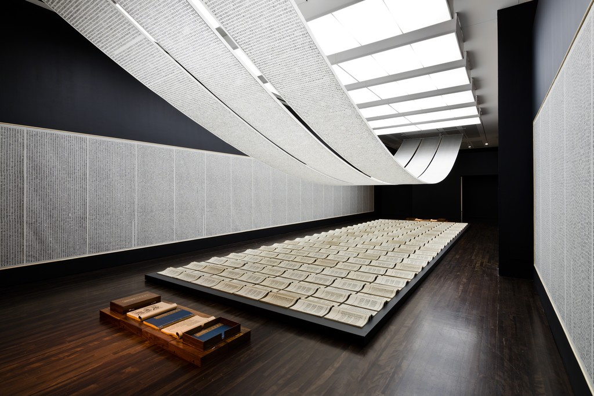
— Book from the Sky by Xu Bing
I learned about this installation by Xu Bing this week, and it’s insane. He made up 4000 fake Chinese characters and hand carved all of them and hand printed all of them. Calligraphy is the oldest art form of China, and studiers of it could not believe that none of the characters that Xu made up were real. Some visitors would come back to the installation and spend days there to try to find a real character even though they were told that all of them were made up. Some were able to identify ancient ones, but their translated meaning doesn’t mean anything to the piece since the replication of characters occurred out of coincidence and because those characters don’t have any meaning now. People were incredibly frustrated that they couldn’t find anything they understood despite everything looking so familiar. Some of the characters were close to real ones, but a missing stroke for example makes it not the same.
Type design for Chinese characters is incredibly time consuming since there is not just 26 letters but over 3000 characters, so its even crazier that Xu was able to invent 4000 of them and carve all of them. This contrasts to how reduced the Latin alphabet is. Of all the possible permutations of strokes and glyphs, only a relatively small set is actual language.
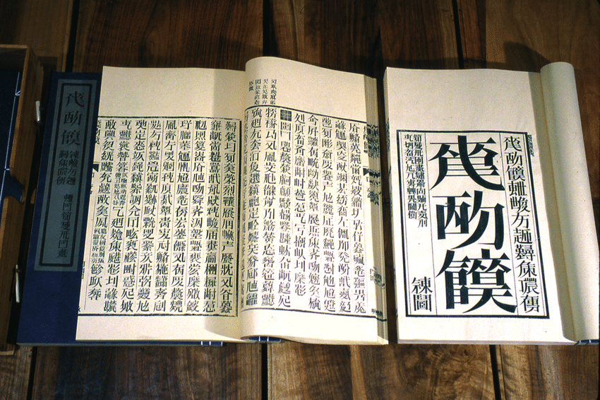
— a shot of one of the codexes
The assignment of meaning to shape is fairly arbitrary and has evolved to become more and more abstract and detached from physical origins. Sans serifs didn’t crop up in printing until the 19th century. New form is slowly adopted and popularized, because accessible type (readable, legible) is important for the dissemination of ideas. When typeform is made for an abstract concept, it becomes a less broadly applicable typeface, and therefore a less useful one. It becomes more about the idea of the typeface and less so the words that it may be applied to…
“Letters are sheer form and writing is rhythm”
— Gerrit Noordzij, The stroke of the pen, via Fred Smeijer’s Type now
It’s not so much the letter as much as it is the word. And it’s not so much the word as it is written language. Materializing ideas in a shareable way is the point.